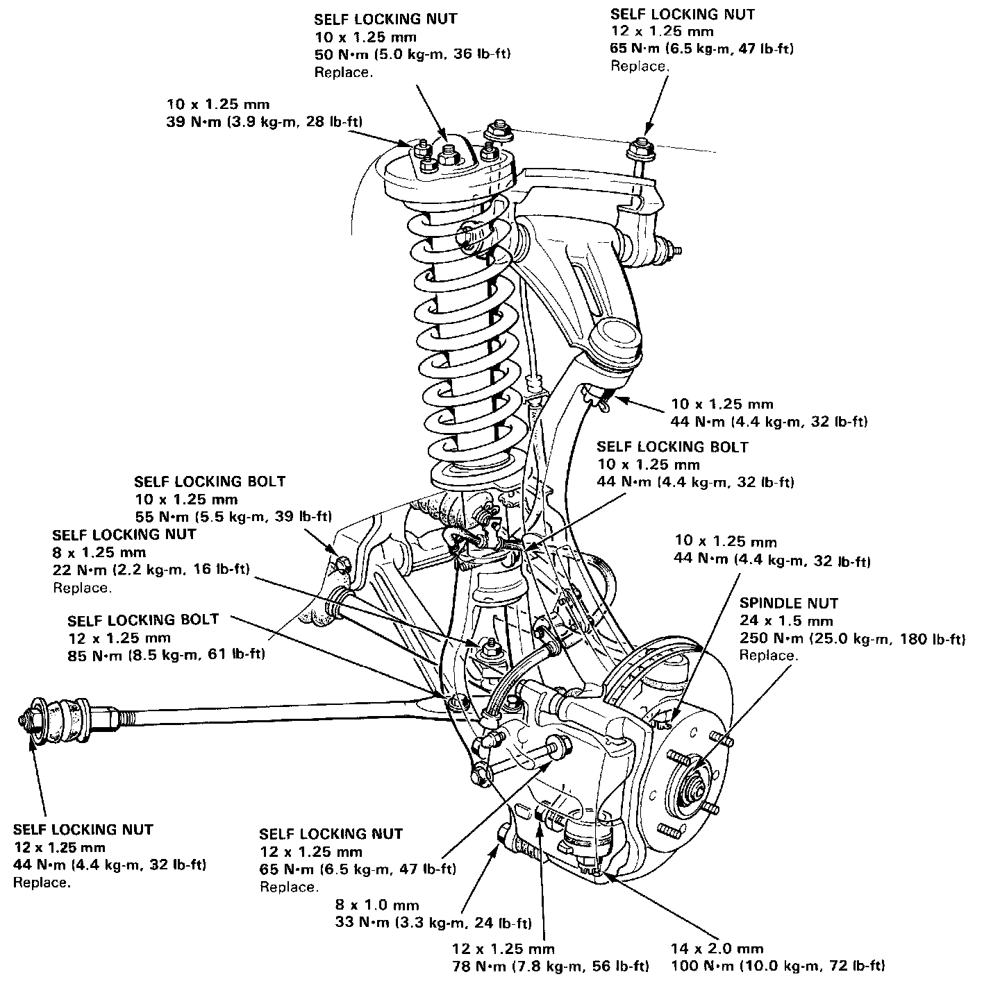
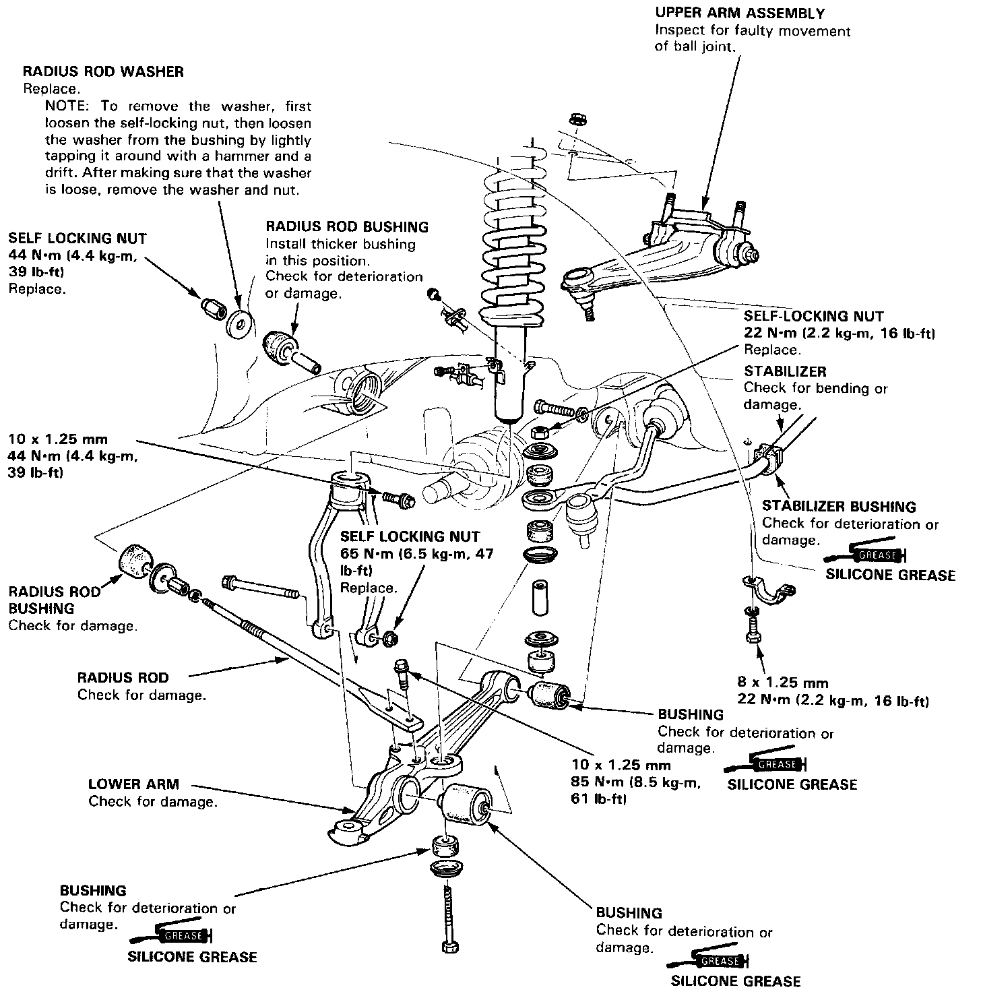
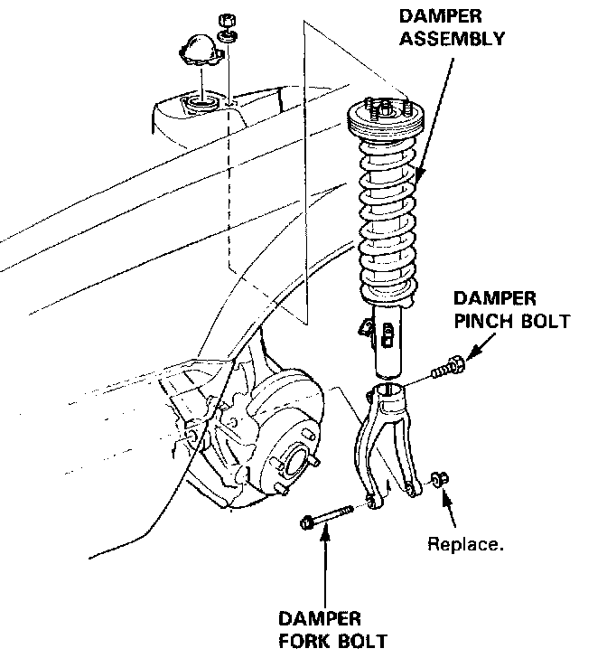
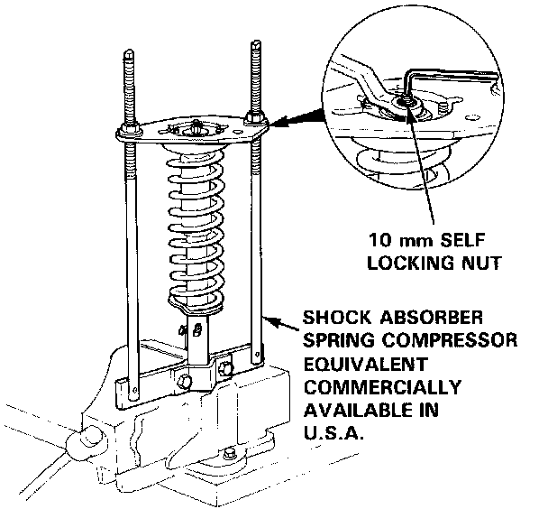
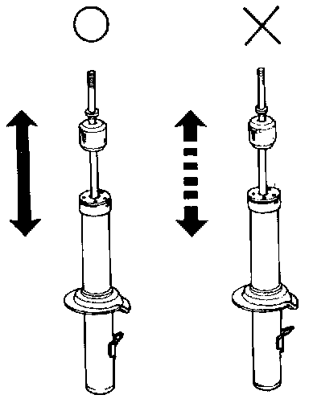
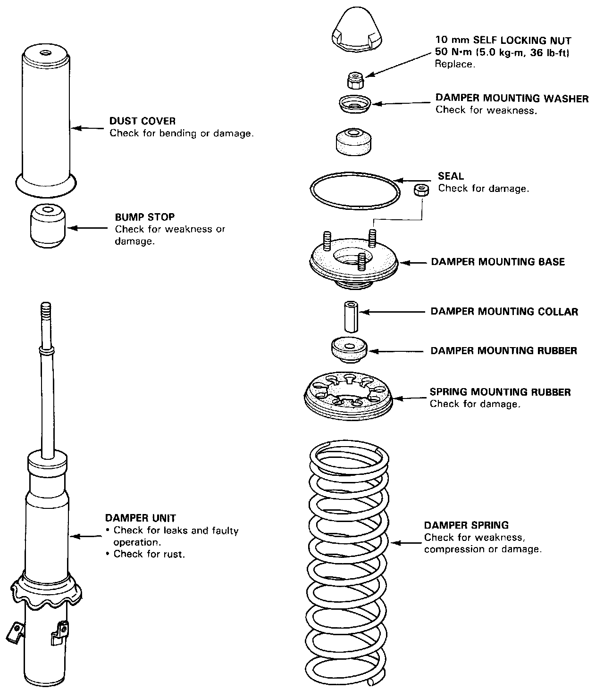
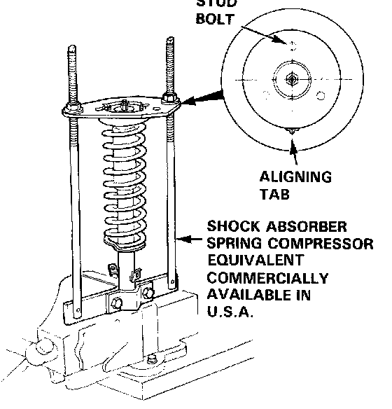
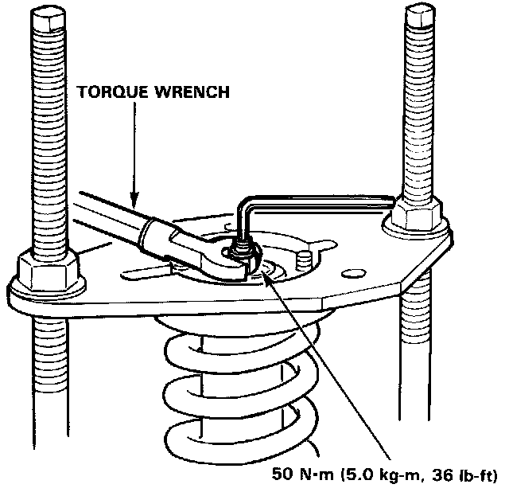
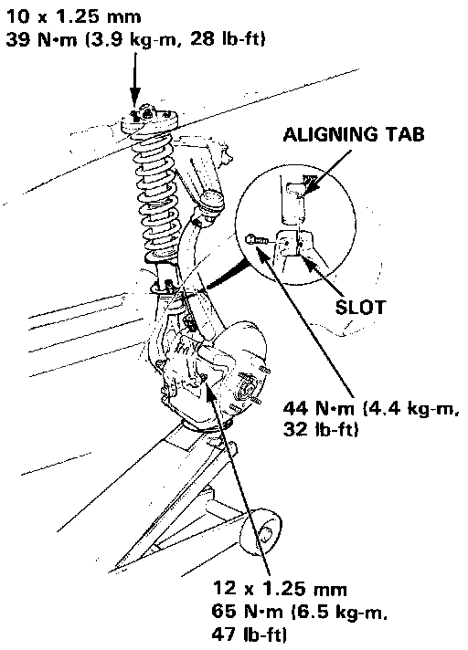

Suspension Strut / Shock Absorber: Service and Repair

Front Suspension Torque Specification
CAUTION:
- Replace the self-locking nuts after removal.
- Replace the self-locking bolts if you can easily thread a nut past their nylon locking inserts.
NOTE: Wipe off the grease before tightening the nut at the ball joint.
CAUTION: Before tightening the bolts or nuts connected to rubber mounts or bushings, the vehicle should be on the ground.
Upper Arm/Stabilizer/Radius Rod/Lower Arm
Index/Inspection
CAUTION:
- The radius rod bushings can easily be mis-installed; the thick radius rod bushing should be installed in the front position
- R or L mark is stamped on the rear end of the radius arm to prevent mis-installation.

Front Damper Removal
1. Remove the brake hose clamps from the damper.
2. Remove the damper pinch bolt.
3, Remove the damper fork bolt and remove the damper fork.
4. Remove the damper by removing the three 10 mm nuts.

Disassembly/Inspection
Compress the damper spring using the spring compressor, then remove the self locking nut.
CAUTION: Do not compress the spring more than necessary to remove the nut.

2. Remove the spring compressor then disassemble the damper as shown in the next column.
3. Check for smooth operation through a full stroke, both compression and extension.

4. Also check for smooth operation in short strokes of
5-10cm (2-4 in.). Replace the damper if resistance is uneven or jerky.
5. Check for oil leaks, abnormal noises or binding during these tests.

Front Damper Inspection
Reassembly
1. Install the damper unit, bump stop, dust cover, damper spring, mounting collar, mounting rubber and spring mounting rubber on the spring compressor.
2. Install the damper mounting base on the damper unit as shown.

3. Compress the damper spring.
4. Install the mounting rubber, mounting washer and 10 mm self locking nut.
5. Hold the damper shaft and tighten the 10 mm self locking nut.

Installation
1. Loosely install the damper on the frame with the aligning tab facing inside.
2. Install the damper fork on the driveshaft and lower arm. Instal the damper in the damper fork so the aligning tab is aligned with the slot in the damper fork.
3. Raise the knuckle with a floor jack until the car just lifts off the safety stands.
NOTE: The damper fork bolt should be tightened with the vehicle on the ground.

4. Tighten the damper pinch bolt.
5. Secure the damper fork bolt with a new 12 mm self locking nut.
6. Secure the damper assembly to the frame with the 10 mm mount nuts.
7. Install the brake hose clamps with the two bolts.